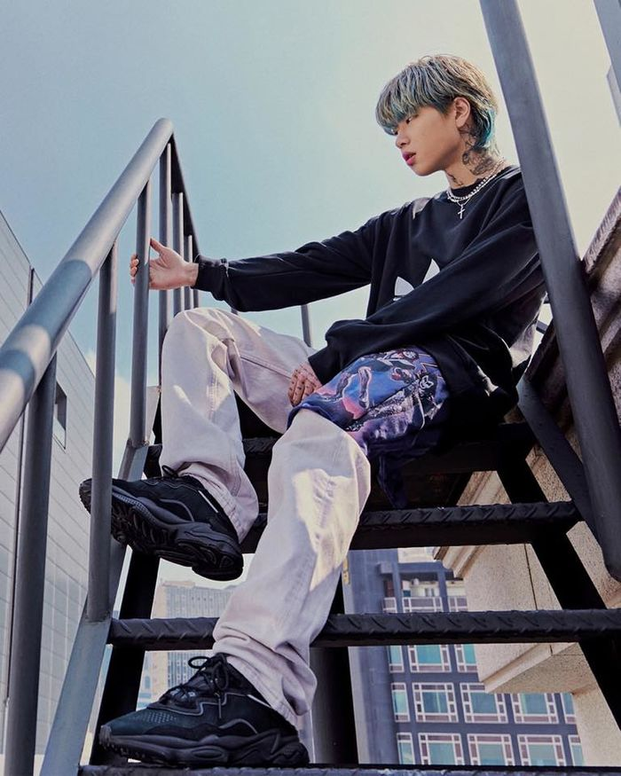
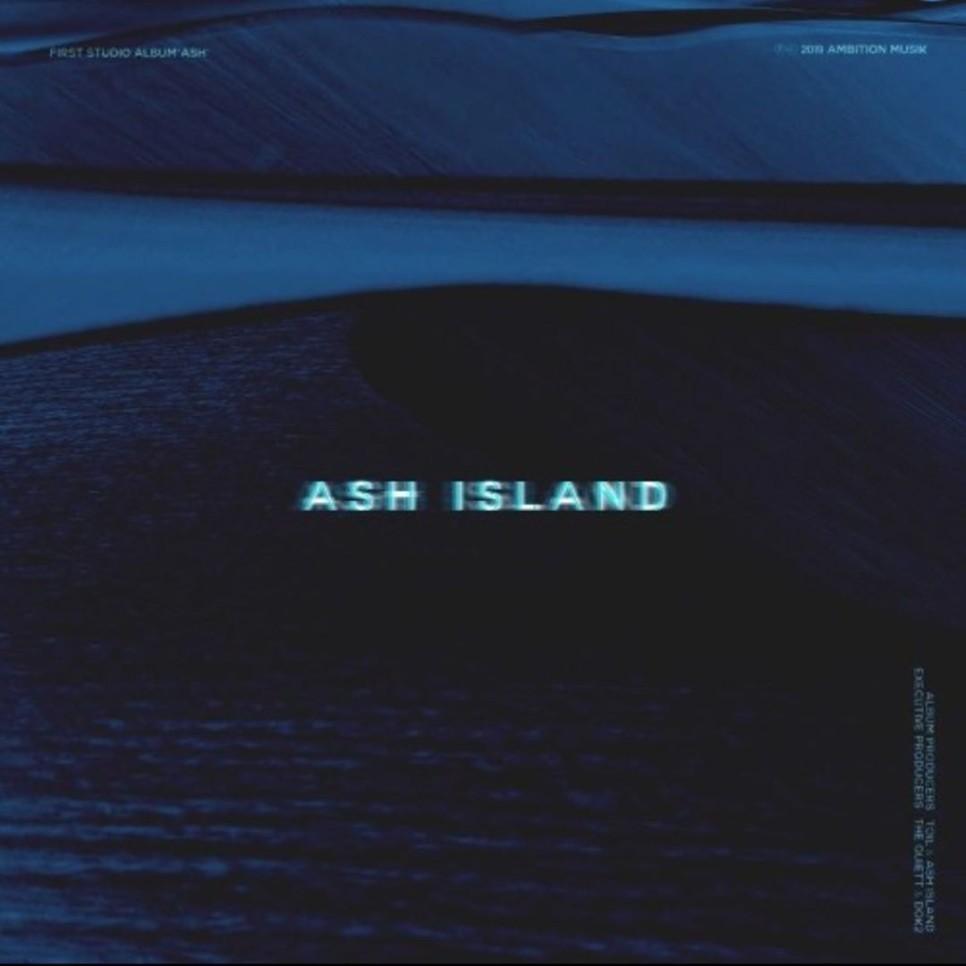
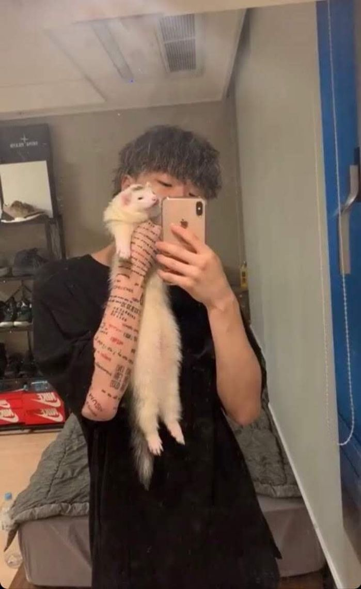
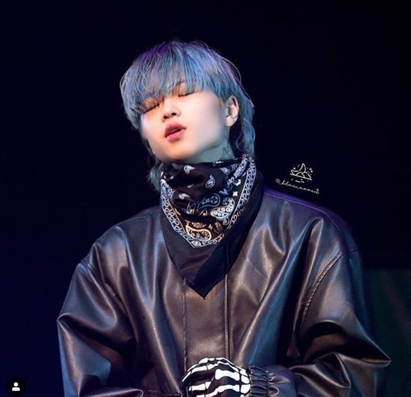
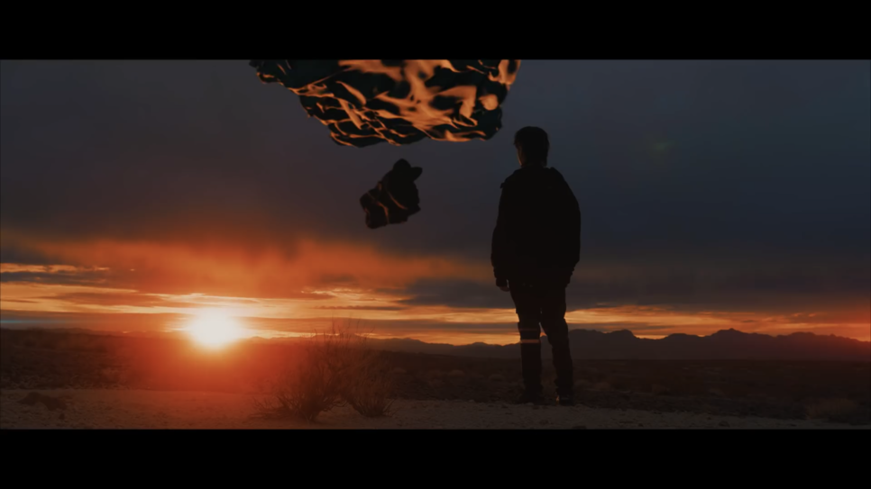

애쉬 아일랜드 (윤진영, Ash Island)22세 (만 20세)
1999년 8월 11일 생, 부산광역시
소속사 : 일리네어 레코즈(앰비션 뮤직)
작년, 프로그램 고등래퍼 2로 이름을 알린 신예 래퍼 윤진영.
프로그램 이후 그는 새로운 랩 네임 “ASH ISLAND “ 로 새로운 출발을 알리며, 레이블 Ambition Musik 에 합류하였다.
그의 데뷔 앨범 ASH 는 프로듀서 TOIL이 전곡 프로듀스 하며, 90년대 락 음악의 사운드와 감성이 결합된 ASH ISLAND 만의 스타일을 선보인다.

Ash
수록곡1. Paranoid
2. 발할라 (Valhalla)
3. DEADSTAAR
4. Forgot U
5. 잠수함
6. Q Mark
7. Fall

Paranoid
애쉬 아일랜드의 첫 데뷔 앨범, [ASH]는 이런 걱정과 기대를 한 몸에 안고 발매되었다.
이 앨범이 처음으로 모습을 보였을 때를 잊지 못한다. 에미넴의 비트에 자신있게 마이크를 잡아들고 랩을 때려 박았던 윤진영의 모습은 온데간데 없었다.
울프컷을 하고, 넓은 들판에서 락 느낌 가득한 파라노이드를 울부짖는 그의 모습은 낯설고도 새로웠다.
살짝의 오토튠이 섞인 목소리가 랩이라기보다는 락에 가까운 'Paranoid'와 어우러져 어디서도 느낄 수 없었던 애쉬만의 느낌을 창조해냈다.
완성도 높은 비트에 중독성 있는 훅까지 겸비한 이번 타이틀 곡은 대중들로부터 윤진영의 이전 모습을
탈피하고 애쉬 아일랜드로서의 입지를 단단히 만들어주는데 충분했다.

Snap
ASH ISLAND - Paranoid [Official Music Video]
별이 보일 때쯤 나는 눈을 감았네
머리까지 이불을 덮어
내가 잘 안 보이게
누군가 내 삶을 뺏아가도 모르기에
거릴 걸을 때는 뒤를 돌아 버릇돼